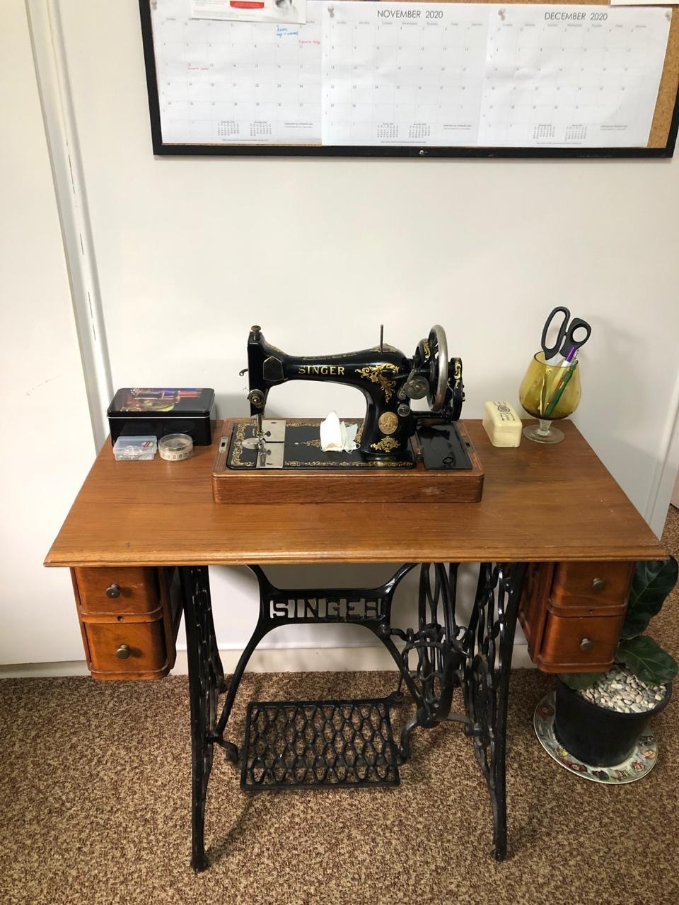
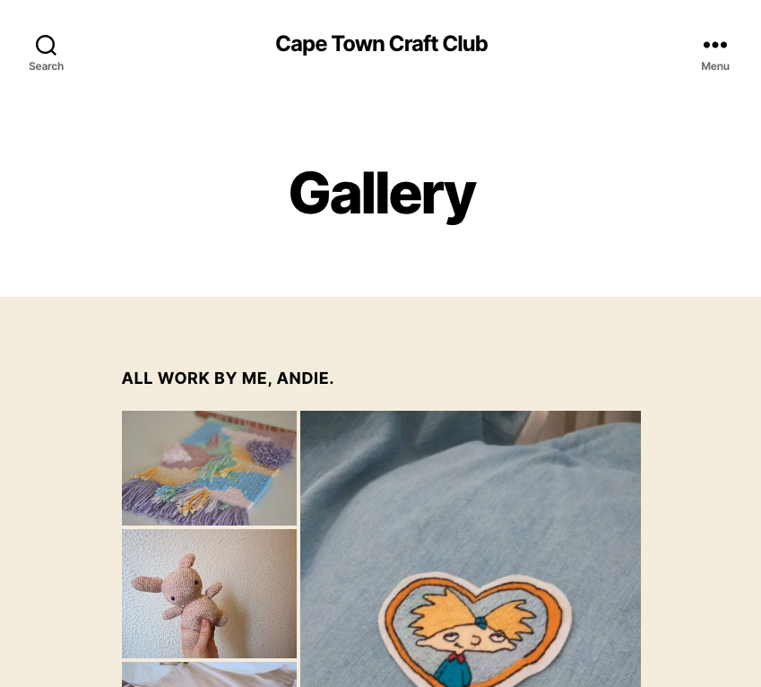
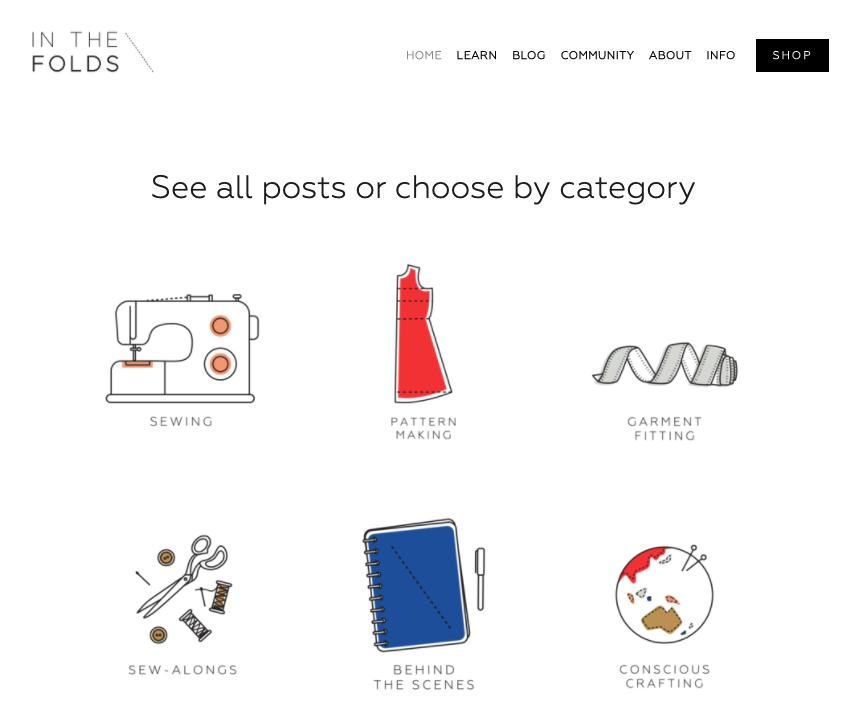
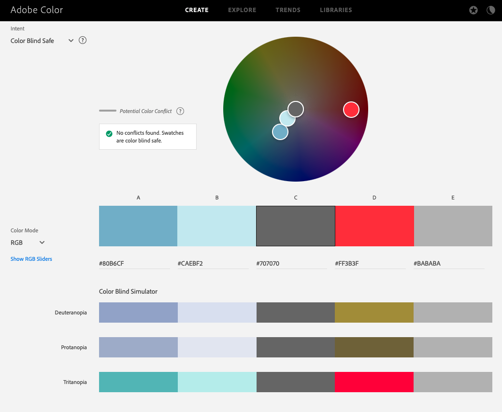

Craftly is a magazine based in Cape Town. It mainly focuses on sewing and targets sewing hobiests and textile artists. I chose a simple structure for the website. Each new issue of the magazine takes center stage on the home page. The cover story has a big image that links to the main article as the very first thing you see, similar to how you would interact with a physical magazine.
From the landing page, below the main article, readers can access the other articles contained in the latest issue. These articles are layed out in a grid format, with a small post image and the title.
From the menu at the top of the page, readers can access some key pages:
During the various lockdowns we've had in Cape Town during the pandemic, I started playing around with an antique Singer sewing machine that belonged to my great grandmother. I admired the simplicity of the machine, and was astonished that it still sewed a perfect line of straight stitches after almost 100 years. I wanted to pay homage to it somehow in this website, so I added a simple dashed line border around some elements in a contrasting colour to reference the stitching pattern of the machine. I also used some sewing-related iconography as a nod to the craft.

In teaching myself how to sew, I was exposed to the Instagram sewing community, and took a lot of inspiration from various blogs and image grids I saw on this platform. In particular, I enjoyed visiting the Cape Town Craft Club and In the Folds websites for inspiration. What I liked about both these websites where the simplicity. They were also both well-structured and easy to navigate.


Another point of inspiration for me was the Kinfolk magazine website. I looked at various magazine websites to get an understanding for how they look and what kind of structure they tend to have. Again, I liked the simplicity of the design, and based my home page design with the front page image and main article being front and center for each new issue on Kinfolk's design.
To contribute to the site's accessibility I've added alt text to all images and graphics.
Because I use certain colours to highlight elements like links or buttons, and to make title sections stand out, I've used a colour palette that is distinct enough that colourblind persons will be able to distinguish shades. I created the palette on Adobe Color and then performed the accessibility check on it.

I used a colour palette that was bright and interesting, but that was also useable for colourblind persons.
The site design is kept simple and consistent so that it is easy to navigate and use. The menu works the same on all pages. I also kept the article text confined to a narrow column to make it easier to read - it really bothers me when text is stretched out across the entire display, like on Wikipedia.
The site is resonsive, so it will look good on all types of screen sizes, including mobile, tablet, and desktop.
The good
I think I did a good job of creating a distinct style for the magazine website. The pages look interesting and are legible, and calls-to-action like subscribe buttons are easy to spot and look appealing.
While there are some slight variations on each page, there is visual harmony on all pages, and they follow the same conventions so site users know what to expect and how to use the components because they work the same way on all pages.
The site is responsive, and works on the three tiers of screen sizes (mobile, tablet, and desktop). I took a mobile-first approach and I think this worked well in the design of the website.
The sewing craft theme of the magazine also shines through in the design, with the menu icon being a spool of thread, and the stitch pattern borders giving a nice touch. I enjoyed bringing in these elements, and if I had unlimited time and more graphic design skills I could probably take the sewing theme much further. I think this brings an element of fun and uniqueness to the site which I enjoy.
Areas I could improve in
The organization of my styling file is too long and cumbersome to work with. I tried to use comments to break it into sections and to keep styles organized according to page and screen size. Initially I was using several css files to try to keep things ordered, but after reading up on it I decided to compile everything into one CSS file to boost my site's speed. I'm not sure if this was the right decision.
I still feel very lost with bringing JavaScript elements into the website. I think if we had practiced adding JavaScript to our midterm assignment it would have been easier for me this time round. I added JavaScript as an after-thought, in stead of designing in the JS functionalities from the start and building things from that point of departure. I think this approach caused me issues in the long run. There are some instances where the layout css I was using would clash with the JavaScript. For example, I wanted to implement a sticky header with some JS, but struggled to get it to work and while I suspect it was something in my CSS causing a problem, I'm not sure that I've fully solved the problem.
Making a site responsive is also more complex than I thought it would be at the onset of this project. I started out by using CSS-grid, but then changed my mind and switched to using flexbox instead. I think flexbox worked much better for what I wanted to achieve, but making this switch in the middle of the project cost me a lot of extra time and I created a bunch of bugs for myself too.
I would say my biggest learning from this project was that I should have started working on it earlier, and I should have time-boxed certain features more. I spent way too much time messing around with fixing things that were ok but not perfect, and in the end kind of ran out of time and then didn't complete things that would have been more useful.
Resources: What resources did you use in your work? List any sources of information, libraries, plugins, code or tools (you should also indicate inclusions from other sources within your code using comments)
Appendices: Site map, wireframes and mock-ups